전자계산기기사 (2012-03-04 기출문제)
1과목: 시스템 프로그래밍
1. 고급 언어에 대한 설명으로 옳지 않은 것은?
- 사람이 일상생활에서 사용하는 자연어에 가까운 형태로 만들어진 언어이다.
- 실행을 위하여 컴파일러에 의해 번역된다.
- 하드웨어에 관한 전문적인 지식이 없어도 프로그램 작성이 용이하다.
- 컴퓨터 기종마다 독립적인 언어를 사용하므로 호환성이 없다.
(정답률: 76%)

2. 매크로는 "MACRO"라는 어셈블리어 명령으로 정의한다. 매크로 정의의 마지막을 의미하는 것은?
- END
- MEND
- ENDM
- INCR
(정답률: 86%)
3. 매크로 기능 설명으로 가장 적합한 것은?
- 컴퓨터의 실행시간을 획기적으로 단출할 수 있다.
- 프로그램의 번역과 해석시간을 단축시킬 수 있다.
- 프로그램의 주기억장치 사용을 크게 줄일 수 있다.
- 하나의 매크로 명령어로 여러 개의 명령어를 사용한 효과를 가져온다.
(정답률: 73%)
4. 여러 개의 프로그램을 논리에 맞게 하나로 결합하여 실행 가능한 프로그램으로 만들어 주는 것은?
- Base register
- JCL
- Linkage editor
- Accumulator
(정답률: 87%)
5. 어셈블러를 두 개의 패스(Pass)로 구성하는 이유로 가장 적당한 것은?
- 기호를 정의하기 전에 사용할 수 있어 프로그램 작성이 쉽기 때문이다.
- 한 개보다 두 개의 패스가 처리속도 측면에서 빠르기 때문이다.
- 두 개의 패스가 프로그램을 작게 만들 수 있기 때문이다.
- 두 개의 패스가 메모리 사용을 보다 효율적으로 할 수 있기 때문이다.
(정답률: 75%)
6. 어셈블리어에서 의사 명령에 해당하는 것은?
- USING
- SR
- AR
- ST
(정답률: 84%)
7. 매크로 프로세서가 수행하는 기본적 작업에 해당하지 않는 것은?
- 매크로 정의 인식
- 매크로 정의 저장
- 매크로 호출 인식
- 매크로 인수 인식
(정답률: 93%)
8. 다음 설명에 해당하는 로더는?
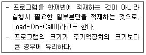
- Dynamic Loading Loader
- Direct Linking Loader
- Absolute Loader
- Compile And Go Loader
(정답률: 68%)
9. 운영체제의 기능으로 옳지 않은 것은?
- 자원보호 기능
- 기억장치 관리 기능
- 자원 스케줄링 기능
- 언어번역 기능
(정답률: 82%)
10. 원시 프로그램을 기계어로 번역해 주는 프로그램에 해당하지 않는 것은?
- 컴파일러(Compiler)
- 어셈블러(Assembler)
- 인터프리터(Interpreter)
- 로더(Loader)
(정답률: 87%)
11. 페이지 교체 알고리즘 중 최근의 사용 여부를 확인하기 위해서 각 페이지마다 2개의 비트, 즉 참조 비트와 변형 비트를 사용하여 최근에 사용하지 않은 페이지를 교체하는 기법은?
- OPT
- SCR
- LFU
- NUR
(정답률: 82%)
12. 어셈블러가 원시 프로그램을 목적 프로그램으로 번역할 때 현재의 오퍼랜드에 있는 값을 다음 명령어의 번지로 할당하는 명령은?
- ORG
- EVEN
- INCLUDE
- CREF
(정답률: 84%)
13. 프로그램 언어의 실행과정으로 옳은 것은?
- 로더 → 링커 → 컴파일러
- 컴파일러 → 로더 → 링커
- 링커 → 컴파일러 → 로더
- 컴파일러 → 링커 → 로더
(정답률: 86%)
14. 다음 설명에 해당하는 스케줄링 기법은?
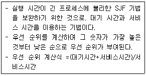
- FCFS
- SRT
- HRN
- Round Robin
(정답률: 81%)
15. 절대로더(absolute loader)를 사용할 경우 다음 중 어셈블러가 수행할 부분의 기능에 해당하는 것은?
- 기억장소 할당(allocation)
- 연계(linking)
- 재배치(relocation)
- 적재(loading)
(정답률: 65%)
16. 하나의 시스템에 독립된 여러 개의 프로그램을 기억시켜 이들을 동시에 처리함으로써 프로그램의 처리량을 극대화하는 시스템을 무엇이라고 하는가?
- 다중 프로그래밍 시스템
- 다중 처리 시스템
- 분산 처리 시스템
- 시분할 시스템
(정답률: 71%)
17. 어셈블리어에 대한 설명으로 옳지 않은 것은?
- 고급 언어에 해당한다.
- 실행을 위해서는 기계어로 번역되어야 한다.
- 어셈블리어에서 사용되는 명령은 의사 명령과 실행 명령으로 구분할 수 있다.
- 프로그램에 기호화된 명령 및 주소를 사용한다.
(정답률: 84%)
18. 교착상태(deadlock) 발생의 필수조건이 아닌 것은?
- Mutual exclusion
- Hold and wait
- Circular wait
- Preemption
(정답률: 66%)
19. 기억장치 배치 전략 중 프로그램이나 데이터가 들어갈 수 있는 크기의 영역 중에서 단편화를 가장 많이 남기는 분할 영역에 배치시키는 방법은?
- First Fit
- Worst Fit
- Best Fit
- Large Fit
(정답률: 96%)
20. 운영체제의 목적으로 거리가 먼 것은?
- 사용자와 컴퓨터 간의 인터페이스 제공
- 처리 능력 및 신뢰도 향상
- 사용 가능도 향상 및 반환 시간 증가
- 데이터 공유 및 주변장치 관리
(정답률: 84%)
2과목: 전자계산기구조
21. 다음 중 3-초과 코드에 포함되지 않는 것은?
- 0000
- 0100
- 1000
- 1100
(정답률: 79%)
22. 사이클 훔침(cycle stealing)에 관한 설명 중 틀린 것은?
- DMA의 우선순위는 메모리 참조의 경우 중앙처리장치보다 상대적으로 높다.
- 중앙처리장치는 메모리 참조가 필요한 오퍼레이션을 계속 수행한다.
- DMA가 중앙처리장치의 메모리 사이클을 훔치는 현상이다.
- 중앙처리장치는 메모리 참조가 필요 없는 오퍼레이션을 계속 수행한다.
(정답률: 56%)
23. 공유기억장치 다중프로세서 시스템에서 사용되는 상호연결 구조가 아닌 것은?
- 버스(bus)
- 큐브(cube)
- 크로스바 스위치
- 다단계 상호연결망
(정답률: 56%)
24. 컴퓨터가 인터럽트 루틴을 수행한 후에 처리하는 것은?
- 전원을 다시 동작시킨다.
- 모니터 화면에 인터럽트 종류를 디스플레이 한다.
- 메모리의 내용을 지워서 다른 프로그램이 적재될 수 있도록 한다.
- 인터럽트 처리시 보존시켰던 PC 및 제어상태 데이터를 PC와 제어상태 레지스터에 복구한다.
(정답률: 84%)
25. 기억장치의 대역폭(bandwidth)이란?
- 기억장치 각 단어(word)의 크기
- 기억장치가 단위시간 동안 전달하거나 받아들일 수 있는 비트 수
- 기억장치 버퍼(buffer)의 크기
- 기억장치의 총용량을 비트로 나타낸 수
(정답률: 78%)
26. DMA(Direct Memory Access)의 설명 중 옳은 것은?
- DMA는 기억장치와 주변장치 사이에 직접적인 자료 전송을 제공한다.
- 자료 전송에 CPU의 레지스터를 직접 사용한다.
- DMA는 주기억장치에 접근하기 위해 사이클 스틸링(cycle stealing)을 한다.
- 속도가 빠른 장치들과 입출력할 때 사용하는 방식이다.
(정답률: 33%)
27. 소프트웨어에 의한 폴링 방식에 대한 설명으로 옳지 않은 것은?
- 경제적이다.
- 융통성이 있다.
- 반응속도가 느리다.
- 정보량이 매우 적은 시스템에 적합하다.
(정답률: 58%)
28. 다음 중에서 정보처리 단위로 가장 큰 것은?
- 필드(Field)
- 파일(File)
- 레코드(Recore)
- 비트(Bit)
(정답률: 82%)
29. 다음 중 마이크로 오퍼레이션은 어디에 기준을 두고서 실행되나?
- Flag
- Clock
- Memory
- RAM
(정답률: 77%)
30. 주변장치나 메모리의 데이터 입출력 방식이 아닌 것은?
- 채널의 사용
- 인터럽트의 사용
- 프로그램 사용
- 버스의 사용
(정답률: 46%)
31. 다음과 같은 마이크로 오퍼레이션과 관련 있는 사이클은?
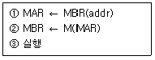
- FETCH CYCLE
- EXECUTE CYCLE
- INDIRECT CYCLE
- INTERRUPT CYCLE
(정답률: 68%)
32. 파이프라인 처리기가 이론적 최대 속도증가율을 내지 못하는 이유로 옳지 않은 것은?
- 병목현상
- 자원 충돌
- 구조
- 분기곤란
(정답률: 66%)
33. CPU 또는 메모리와 입출력장치의 속도 차이에서 오는 성능저하를 극복하기 위한 방법이 아닌 것은?
- 버퍼
- 캐시 메모리
- 오프라인
- DMA
(정답률: 77%)
34. cache memory에 대한 설명과 가장 관계가 깊은 것은?
- 내용에 의해서 access되는 memory unit이다.
- 대형 computer system에서만 사용되는 개념이다.
- 현재 실행 중인 명령어나 자주 필요한 data를 저장하는 초고속 기억장치이다.
- memory에 접근을 각 module별로 액세스하도록 하는 기억장치이다.
(정답률: 68%)
35. 어떤 프로그램이 수행 중 인터럽트 요인이 발생했을 때 CPU가 확일할 사항에 속하지 않는 것은?
- 프로그램 카운터의 내용
- 관련 레지스터의 내용
- 상태 조건의 내용
- 스택의 내용
(정답률: 58%)
36. 비교적 저속의 I/O 장치에 사용되는 채널은?
- 바이트 멀티플렉서 채널
- 실렉터 채널
- 블록 멀티플렉서 채널
- 서브 채널
(정답률: 68%)
37. 그레이 코드에 대한 설명으로 옳지 않은 것은?
- 자기 보수의 특성을 가지고 있다.
- 가중치를 갖지 않는 코드이다.
- 코드 변환을 위해 EX-OR 게이트를 사용한다.
- 아날로그/디지털 변환기를 제어하는 코드에 사용된다.
(정답률: 64%)
38. 우선순위 중재 방식 중 중재동작이 끝날 때마다 모든 마스터들의 우선순위가 한 단계씩 낮아지고, 가장 우선순위가 낮았던 마스터가 최상위 우선순위를 가지는 방식은?
- 회전우선순위
- 임의우선순위
- 동등우선순위
- 최소-최근 사용 우선순위
(정답률: 94%)
39. DRAM은 기억된 정보의 보존을 위하여 주기적으로 재생(refresh)시켜 주어야 된다. 재생 주기가 2[msec]인 16×16 DRAM의 행당 재생 사이클은?
- 62.5[μsec]
- 125[μsec]
- 250[μsec]
- 500[μsec]
(정답률: 82%)
40. 2의 보수로 표현된 -14(십진)을 오른쪽으로 1비트 산술 시프트 했을 때의 결과는? (단, 2진수의 표현은 8비트(부호비트 포함)를 사용한다.)
- 10111001
- 11111001
- 11111000
- 11110100
(정답률: 68%)
3과목: 마이크로전자계산기
41. 신호(signal)가 Low라면 모뎀 또는 데이터 셋이 UART와 통신을 성립할 준비가 되어 있음을 의미하는 것은?
- TXD
- nDSR
- nRI
- nDCD
(정답률: 53%)
42. 동기형 계수기로 사용할 수 없는 것은?
- 리플 카운터
- BCD 카운터
- 2진 카운터
- 2진 업다운 카운터
(정답률: 62%)
43. 화상회의에서 많이 사용되는 압축ㆍ부호화 방식의 표준으로 p×64[kbps](p=1~30)의 전송속도를 가지는 것은?
- H.261
- JPEG
- MPEG
- DSP
(정답률: 60%)
44. 마이크로컴퓨터와 외부장치 간에 적외선을 이용하여 데이터를 주고받는 방식은?
- 블루투스(Bluetooth)
- IrDA
- USB
- IEEE1394
(정답률: 70%)
45. 동기식 비트 직렬 전송의 동작 순서로 옳은 것은?
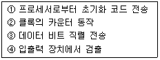
- ② -① -③ -④
- ① -③ -④ -②
- ① -④ -② -③
- ④ -① -③ -②
(정답률: 47%)
46. 마이크로프로세서는 클록(clock)에 의해 제어된다. 이 클록을 발생하는 회로는?
- 수정발진
- LC발진
- RC발진
- 마이크로발진
(정답률: 65%)
47. IEEE 488 버스에 대한 설명 중 틀린 것은?
- 16 signal line으로 구성되어 있다.
- 3 line의 전송 제어선은 기기의 데이터 입출력시에 handshaking 하는데 사용된다.
- serial data 전송에 적합하다.
- GPIB라고도 하며 시스템간 통신에 많이 사용된다.
(정답률: 64%)
48. CPU가 무엇을 하고 있는가를 나타내는 상태를 무엇이라 하는가?
- fetch state
- major state
- stable state
- unstable state
(정답률: 73%)
49. 마이크로프로세서의 주요 구성블록으로 볼 수 없는 것은?
- ALU
- 제어부
- 레지스터부
- 주기억장치
(정답률: 52%)
50. 최근 마이크로컴퓨터의 병렬 포트 표준 모드 중 고속 DMA 전송을 할 수 있도록 지원하는 모드는?
- SPP(Standard Parallel Port)
- Byte
- EPP(Enhanced Parallel Port)
- ECP(Extended Capability Port)
(정답률: 62%)
51. 서브루틴을 수행하기 위해 사용되는 것은?
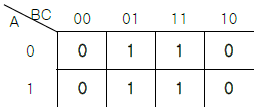
- Stack
- Queue
- Linked list
- Array
(정답률: 61%)
52. 인출 사이클(fetch cycle)에서 active low로 되지 않는 신호는? (단, Z80 기준)
- M1
- WR
- RFSH
- MREQ
(정답률: 60%)
53. 마이크로프로그램 제어 방식의 특징이 아닌 것은?
- 제어 신호를 위한 마이크로 명령어를 저장한다.
- 제어 내용을 변경하기가 쉽다.
- 유지, 보수성이 좋다.
- 속도가 빠르다.
(정답률: 38%)
54. CMOS RAM의 설명 중 옳지 않은 것은?
- 상보성 금속 산화막 반도체 제조 공법을 사용한다.
- 전원으로부터의 잡음에 대한 허용도가 낮다.
- 전력 소비량이 낮다.
- 건전지로 전원이 공급되는 하드웨어 구성 요소에 유용하게 사용된다.
(정답률: 45%)
55. 다음 중 I/O 버스를 통하여 접속된 command에 대한 해석이 이루어지는 곳은?
- 커맨드 디코더
- 상태 레지스터
- 버퍼 레지스터
- 인스트럭션 레지스터
(정답률: 54%)
56. JTAG(Joint Test Action Group) 인터페이스에서 핀으로 칩 안에 구성되지 않는 것은?
- TDI(데이터 입력)
- TMS(모드)
- TTS(전송)
- TRST(리셋)
(정답률: 38%)
57. 하나의 서브루틴 속에 존재하는 또 하나의 서브루틴, 즉, 서로 다른 서브루틴 중에서 호출되는 서브루틴을 무엇이라 하는가?
- Nested Subroutine
- Open Subroutine
- Closed Subroutine
- Cross Subroutine
(정답률: 60%)
58. PLA의 프로그래밍에 대한 설명으로 옳은 것은?
- AND와 OR 배열 모두를 프로그래밍 할 수 있다.
- AND 배열만 프로그래밍 한다.
- OR 배열만 프로그래밍 한다.
- 프로그래밍을 할 필요가 없다.
(정답률: 66%)
59. 4개의 플립플롭으로 구성한 4비트 리플카운터(ripple counter)는 입력 주파수를 어떤 주파수의 파형으로 변화하는가?
- 1/4 주파수의 파형
- 1/8 주파수의 파형
- 1/16 주파수의 파형
- 1/32 주파수의 파형
(정답률: 70%)
60. 제어논리가 마이크로프로그램 기억장치인 읽기용 기억장치(ROM)에 구성되어 있어, 여러 대규모 집적회로군이 이미 마이크로프로그램 되어 있는 것은?
- 가상 CPU
- 슈퍼 워크스테이션
- 슈퍼 VHS
- 쇼트키 쌍극형 마이크로컴퓨터 세트
(정답률: 72%)
4과목: 논리회로
61. 다음과 같이 표시된 카르노도를 간소화한 식은?
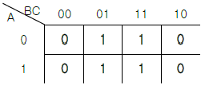
- B'C
- BC
- C
- A'C
(정답률: 63%)
62. 다음은 무슨 카운터인가?
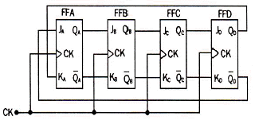
- 리플 카운터
- 존슨 카운터
- 링 카운터
- 궤환 카운터
(정답률: 67%)
63. 다음 회로에 대한 설명으로 틀린 것은? (단, 정의 논리이다.)
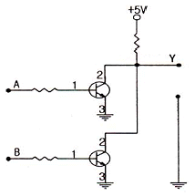
- NOR gate로 동작된다.
- 입력 A=0, B=0일 경우 출력 Y=1이 된다.
- 입력 A=1, B=1일 경우 출력 Y=0이 된다.
- 2개의 트랜지스터를 이용한 비교회로이다.
(정답률: 79%)
64. 2진수 11001011(2)을 그레이 코드로 변환하면?
- 01010001(G)
- 11101111(G)
- 10101110(G)
- 00010000(G)
(정답률: 66%)
65. [그림]의 논리회로는 어떤 게이트 함수와 같은가?
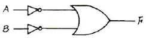
- NOR
- NAND
- EX-OR
- AND
(정답률: 52%)
66. 순서 논리회로와 조합 논리회로의 차이점은?
- NAND 게이트로 구성되느냐 NOR 게이트로 구성되느냐의 차이
- AND 게이트로 구성되느냐 OR 게이트로 구성되느냐의 차이
- 메모리가 있느냐 없느냐의 차이
- 궤환이 되느냐 안되느냐의 차이
(정답률: 56%)
67. 10진수 24를 BCD code로 나타내면?
- 01010111
- 00011000
- 01100100
- 00100100
(정답률: 63%)
68. 전가산기 회로에서 캐리 Cn을 나타내는 것은?
- Cn = (A⊕B)C
- Cn = AB+C
- Cn = (A⊕B)'C+AB
- Cn = (A⊕B)C+AB
(정답률: 54%)
69. JK 플립플롭의 특성식은?
- Q(t+1) = JQ' + K'Q
- Q(t+1) = J'Q' + KQ
- Q(t+1) = JQ + KQ
- Q(t+1) = JQ + K'Q'
(정답률: 60%)
70. 순서논리회로의 동작 특성을 가장 올바르게 설명한 것은?
- 같은 입력이 주어지는 한 출력은 항상 일정하다.
- 연속적으로 동일한 입력 값이 주어질 때만 정상 동작을 한다.
- 입력 값에 관계없이 정해진 순서에 맞추어 출력이 생성된다.
- 동일한 입력이 주어져도 내부 상태에 따라 출력이 달라질 수 있다.
(정답률: 61%)
71. 다음 논리회로에서 OR 회로의 결과와 같은 것은?
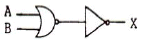
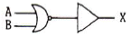
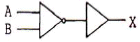
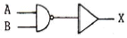
(정답률: 60%)
72. 2입력을 갖는 OR 게이트를 NOR 게이트로 구현하려면 최소한 몇 개의 NAND 게이트가 필요한가?
- 1
- 2
- 3
- 4
(정답률: 52%)
73. 다음 논리회로와 등가인 것은?
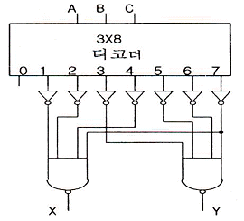
- 전가산기
- BCD 가산기
- 전감산기
- BCD 감산기
(정답률: 54%)
74. 논리식 A(A‘+B)를 간단히 하면?
- 1
- 0
- AB
- B
(정답률: 63%)
75. 다음 회로에서 Q가 0일 때, A와 B가 아래와 같이 변하면 Q의 값의 변화는?
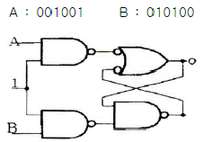
- 001101
- 001001
- 010010
- 001011
(정답률: 58%)
76. 다음 표와 같이 동작하는 MN 플립플롭이 있다고 가정할 경우, 현재상태 출력 Q=1일 때 다음상태 출력 Q+=1이기 위한 M과 N의 입력으로 가장 타당한 것은? (단, x는 don't care)
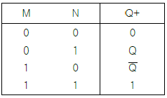
- M=1, N=x
- M=0, N=x
- M=x, N=1
- M=x, N=0
(정답률: 60%)
77. 5비트 ripple 카운터의 클록(clock) 단자에 16[MHz]를 가할 때 마지막 플립플롭에서 나타나는 주파수는?
- 80[MHz]
- 3.2[MHz]
- 1[MHz]
- 0.5[MHz]
(정답률: 21%)
78. [그림]의 회로에서 입력 A = low level, B = high level이라고 할 때 high level 출력이 되는 곳은?
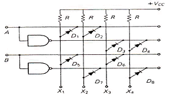
- X1
- X2
- X3
- X4
(정답률: 64%)
79. 다음은 어떤 조합논리회로의 진리표인가? Inputs Outputs
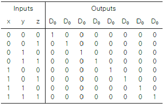
- 3-to-8 인코더
- 3-to-8 디코더
- 3-to-8 멀티플렉서
- 3-to-8 디멀티플렉서
(정답률: 71%)
80. 다음 중 고속의 컴퓨터 연산회로에 사용하는 회로는?
- DTL
- ECTL
- HTL
- CMOS
(정답률: 47%)
5과목: 데이터통신
81. 시분할 다중화(TDM)의 설명으로 옳은 것은?
- 여러 신호를 전송매체의 서로 다른 주파수 대역을 이용하여 동시에 전송하는 기술이다.
- 동기식 시분할 다중화는 한 정송회선의 대역폭을 일정한 시간 단위로 나누어 각 채널에 할당하는 방식이다.
- 동기식 시분할 다중화는 대역폭을 감소시키는 효과가 있어, 전체적인 전송 시스템의 성능이 향상되는 장점이 있다.
- 비동기식 시분할 다중화는 헤더 정보를 필요로 하지 않으므로, 동기식 시분할 다중화에 비해 시간 슬롯당 정보 전송률이 증가한다.
(정답률: 57%)
82. 다음 설명에 해당하는 통신망은?
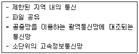
- 종합정보통신망(ISDN)
- 부가가치통신망(VAN)
- 근거리통시망(LAN)
- 가입전산망(Teletex)
(정답률: 75%)
83. 협대역 ISDN에서 사용하는 D채널의 기능에 해당하는 것은?
- 회선 교환 방식을 위한 신호기능 정보의 전송
- 1536[Kbps]의 사용자 정보 전송
- 고속 팩시밀리, 화상 회의와 같은 고속정보 전송
- 패킷 교환방식에 의한 384[Kbps] 이하의 정보 전송
(정답률: 41%)
84. 효율적인 전송을 위하여 넓은 대역폭(혹은 고속 전송 속도)을 가진 하나의 전송링크를 통하여 여러신호(혹은 데이터)를 동시에 실어 보내는 기술은?
- 회선 제어
- 다중화
- 데이터 처리
- 전위 처리기
(정답률: 84%)
85. OSI 7계층 중 암호화, 코드변환, 데이터 압축의 역할을 담당하는 계층은?
- Data link Layer
- Application Layer
- Presentation Layer
- Session Layer
(정답률: 71%)
86. IPv4에서 IPv6로의 천이를 위해 IETF에 의해 고안된 전략으로 옳은 것은?
- Tunneling
- Mobile IP
- Hop Limit
- Header Extension
(정답률: 62%)
87. OSI 7계층 중 데이터 링크 계층에 해당하는 프로토콜이 아닌 것은?
- PPP
- LLC
- HDLC
- UDP
(정답률: 64%)
88. 블루투스(Bluetooth)에 대한 설명으로 틀린 것은?
- 양방향 통신을 위해 FDD 방식을 사용한다.
- 2.4[GHz]대의 ISM 밴드를 이용한다.
- 회로 구성을 간략화 할 수 있다.
- 간섭에 비교적 강한 주파수 호핑 방식을 채용한다.
(정답률: 43%)
89. HTTP(Hyper Text Transfer Protocol)에 대한 설명으로 틀린 것은?
- 클라이언트 프로그램과 서버 프로그램으로 구현된다.
- 지속(persistent) 연결과 비 지속(nonpersistent) 연결 두 가지를 모두 허용한다.
- HTTP 명세서 1.0(RFC 1945)과 1.6(RFC 2616)에서 HTTP의 메시지 형식을 정의한다.
- WWW(World Wide Web)에서 데이터를 액세스하는데 이용되는 프로토콜이다.
(정답률: 62%)
90. TCP/IP 관련 프로토콜 중 인터넷 계층에 해당하는 것은?
- SMNP
- HTTP
- SMTP
- ICMP
(정답률: 60%)
91. 비동기 전송에 대한 설명으로 틀린 것은?
- 비동기 전송에서 수신기는 자신의 클록 신호를 사용하여 회선을 샘플링하고 각 비트의 값을 읽어내는 방식이다.
- 문자 전송시 맨 앞에 시작을 알리기 위한 start bit를 두고, 맨 뒤에는 종료를 알리는 stop bit를 둔다.
- 어떤 문자라도 전송되지 않을 때는 통신 회선은 휴지(idle) 상태가 된다.
- 송수신기의 클록 오차에 의한 오류 발생을 줄이기 위해 짧은 비트열은 전송하지 않음으로써 타이밍 오류를 피한다.
(정답률: 55%)
92. X.25 프로토콜의 계층 구조에 포함되지 않는 것은?
- 패킷 계층
- 링크 계층
- 물리 계층
- 네트워크 계층
(정답률: 50%)
93. 프로토콜의 기본 구성 요소가 아닌 것은?
- entity
- syntax
- semantic
- timing
(정답률: 67%)
94. 회선 교환(circuit switching)에 대한 설명으로 옳지 않은 것은?
- 송신스테이션과 수신스테이션 사이에 데이터를 전송하기 전에 먼저 교환기를 통해 물리적으로 연결이 이루어져야 한다.
- 음성이나 동영상과 같이 연속적이면서 실시간 전송이 요구되는 멀티미디어 전송 및 에러 제어와 복구에 적합하다.
- 현재 널리 사용되고 있는 전화시스템을 대표적인 예로 들 수 있다.
- 송신과 수신스테이션 간에 호 설정이 이루어지고 나면 항상 정보를 연속적으로 전송할 수 있는 전용 통신로가 제공되는 셈이다.
(정답률: 70%)
95. 데이터 전송 중 한 비트에 에러가 발생했을 경우 이를 수신측에서 정정할 목적으로 사용되는 것은?
- P/F
- HRC
- Checksum
- Hamming code
(정답률: 63%)
96. HDLC의 동작 모드 중 전이중 전송의 점대점 균형 링크 구성에 사용되는 것은?
- PAM
- ABM
- NRM
- ARM
(정답률: 41%)
97. 일반적으로 데이터 통신의 전송제어 절차에 해당되지 않는 것은?
- 통신 회선 접속
- 데이터 링크 설정
- 데이터 구조의 확인
- 통신 회선 절단
(정답률: 73%)
98. IEEE 802 표준모델에 대해 옳게 연결된 것은?
- 802.2 - 토큰버스
- 802.5 - 토큰링
- 802.4 - LLC
- 802.6 - CSMA/CD
(정답률: 73%)
99. 다음 설명에 해당하는 다중접속방식은?
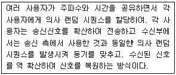
- FDMA
- CDMA
- TDMA
- SFMA
(정답률: 52%)
100. 문자 동기 전송방식에서 데이터 투과성(Data Transparent)을 위해 삽입되는 제어문자는?
- ETX
- STX
- DLE
- SYN
(정답률: 70%)